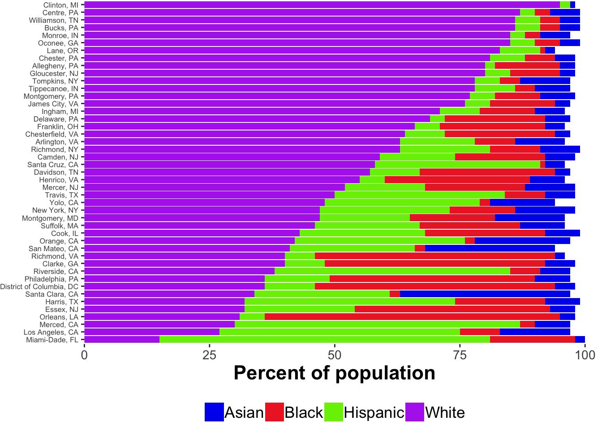

counties <- read.csv(paste0(csv.dir, "city-state-county.csv"), stringsAsFactors = FALSE)
if (file.exists("analysis/csv/county_regions.csv")) {
county.regions <- read.csv(file = "analysis/csv/county_regions.csv")
} else {
data(county.regions)
}
counties <- left_join(counties, county.regions)## Joining, by = "region"# Load county demog data if stored local copy exists
if (file.exists(paste0(csv.dir, "county_demo_data_2015.csv"))) {
demog <- read.csv(file = paste0(csv.dir, "county_demo_data_2015.csv"))
} else {
demog <- choroplethr::get_county_demographics(endyear=2015, span=5)
}
county.demo <- left_join(counties, demog)## Joining, by = "region"# Recapitalize county
county.demo$County <- unlist(lapply(county.demo$County, Cap_all))
# Hack District Of columbia...TODO(ROG): Fix Cap_all()
county.demo$County[county.demo$County == "District Of columbia"] = "District of Columbia"
county.demo <- county.demo %>%
mutate(state.cty = paste0(County, ", ", State)) # county.demo %>%
# filter(Collecting == "Collecting") %>%
# arrange(US.Region, Site.code, State, County) %>%
# select(US.Region, Site.code, State, County, total_population,
# percent_white, percent_black, percent_asian,
# percent_hispanic, multi) ->
# county.race.ethnicitycounty.demo %>%
select(US.Region, Site.code, State, County, state.cty, percent_black, percent_hispanic, percent_asian, percent_white) %>%
gather(key = race, value = pop.percent, percent_black:percent_white) ->
county.pop.percent
county.pop.percent$race <- recode(county.pop.percent$race,
percent_black = "Black",
percent_hispanic = "Hispanic",
percent_asian = "Asian",
percent_white = "White")
# county.pop.percent <- county.pop.percent %>%
# mutate(state.cty = paste0(County, ", ", State)) # county.pop.percent %>%
# ggplot() +
# aes(y = pop.percent, x = race, fill = race,
# color = race, group = County) +
# geom_line(color = "black", linetype = 1, alpha = 0.2) +
# geom_point(size = 3) +
# ylab("Proportion of population") +
# theme_classic() +
# theme(legend.position = "none",
# axis.title = element_text(size = rel(1.5), face ="bold"),
# axis.text = element_text(size = rel(1.2)))plot.demo.by.state.cty <- function(d, region = "East") {
d %>%
filter(US.Region == region) %>%
ggplot() +
aes(x = state.cty, y = pop.percent, fill = race) +
geom_col() +
coord_flip() +
theme_classic() +
theme(legend.position = "bottom",
axis.title = element_text(size = rel(1.5), face ="bold"),
axis.text = element_text(size = rel(1.2)),
axis.text.x = element_text(),
axis.title.x = element_blank(),
axis.title.y = element_blank())
}#plot.demo.by.state.cty(county.pop.percent, "East")#plot.demo.by.state.cty(county.pop.percent, "West")#plot.demo.by.state.cty(county.pop.percent, "South")#plot.demo.by.state.cty(county.pop.percent, "Midwest")county.demo %>%
mutate(p.white = percent_white) %>%
select(State, County, p.white) ->
p.white.sortlist
left_join(county.pop.percent, p.white.sortlist) %>%
arrange(p.white) %>%
mutate(state.cty = factor(state.cty, unique(state.cty))) %>%
ggplot() +
aes(x = state.cty, y = pop.percent, fill = race) +
geom_col() +
scale_fill_discrete(limits=c("Asian", "Black", "Hispanic", "White")) +
play.palette +
play.theme +
coord_flip() +
scale_y_continuous(expand=c(0,0)) +
ylab("Percent of population")## Joining, by = c("State", "County")## Scale for 'fill' is already present. Adding another scale for 'fill',
## which will replace the existing scale.
county.pop.percent %>%
group_by(Site.code, State, County) %>%
summarize(tot.p = sum(pop.percent))## # A tibble: 45 x 4
## # Groups: Site.code, State [?]
## Site.code State County tot.p
## <chr> <chr> <chr> <int>
## 1 BU MA Suffolk 96
## 2 CHI IL Cook 99
## 3 CHOP NJ Camden 98
## 4 CHOP NJ Gloucester 98
## 5 CHOP PA Bucks 99
## 6 CHOP PA Chester 98
## 7 CHOP PA Delaware 97
## 8 CHOP PA Montgomery 98
## 9 CHOP PA Philadelphia 97
## 10 COR NY Tompkins 97
## # ... with 35 more rowscounty.demo %>%
arrange(per_capita_income) %>%
mutate(state.cty = factor(state.cty, unique(state.cty))) %>%
ggplot() +
aes(x = state.cty, y = per_capita_income, fill = US.Region) +
geom_col() +
coord_flip() +
play.theme +
play.palette +
scale_y_continuous(expand=c(0,0)) +
ylab("Median per capita income by site")